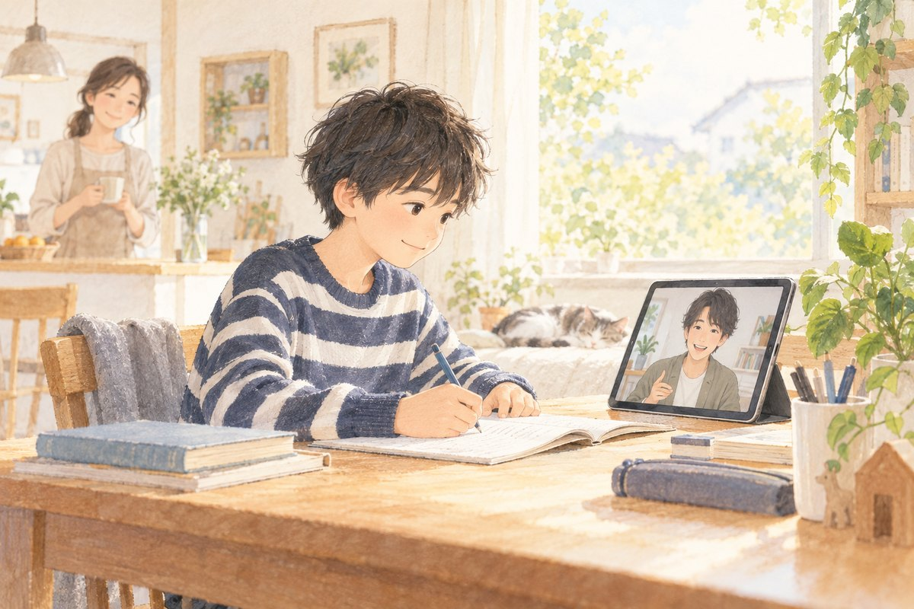

不登校から国立医学部に現役合格した講師が書いた、3分で読める無料の小冊子
明け方までゲームをして、学校に行けなくなった僕が、国立医学部に現役合格するまで。

僕は、毎晩、朝の3時から5時ごろまで、ゲームやYouTubeをしていました。朝は起きられず、そのうち学校に行けなくなりました。人と話すのも苦手で、ADHDの特性もあって、机に向かっても集中が続きませんでした。
変わったのは、親がそのままの僕を受け止めてくれるようになってからです。そこで初めて「何かやってみようかな」と思えました。最初にやったのは、勉強ではなく、体を動かすこと。そこから少しずつ立て直して、国立医学部に現役合格しました。
ここには、自分が立て直してきた中で分かったことと、個別指導で子どもたちを教えてきて分かったことを、1つずつ短い小冊子にまとめています。どれも無料で読めます。お子さんに合いそうなものから、開いてみてください。
Study Support 講師
まずは、この5冊から
すべての小冊子
不登校から、国立医学部に現役合格。
小冊子に書いたことを、お子さんに合わせて一緒に。
わかる所まで戻って教える
学年にこだわらず、つまずいた所からやり直します。
授業のあとも、家で続く
復習プリント、写真での質問、保護者さまへ毎回ひとこと報告。
勉強以外の話もできる
不登校を経験した先生だから、学校や進路の話も急かさず聞きます。
- 授業
- Google Meet。自宅から、スマホでも受けられます。
- 対象
- 小・中・高。学校を休みがちな子、集中が続きにくい子、発達の特性がある子、勉強が苦手な子
- 受験・テスト
- 中学受験・高校受験・大学受験の対策、定期テスト・模試の対策もできます
- 1フォームから申込み（1分）ご希望の日時を3つまで選べます
- 2無料15分面談（オンライン）保護者さまだけのご参加でも大丈夫です
- 3授業スタートお子さんのペースで進めます
よくある質問
子どもが、人と話すのが苦手です。大丈夫ですか？
大丈夫です。僕自身、人と話すのが苦手でした。答えを急かさずに待ちますし、勉強以外の話から入る日があってもかまいません。最初の面談は、保護者さまだけでも大丈夫です。
まったく勉強していない状態からでも、始められますか？
始められます。学年にこだわらず、わかる所まで戻ってから進めます。
発達の診断がなくても、相談できますか？
できます。診断があるかどうかは関係ありません。集中が続きにくい、始めるまでに時間がかかる、など、気になっていることをそのまま聞かせてください。
受験や定期テストの対策もできますか？
できます。中学受験・高校受験・大学受験の対策や、定期テスト・模試の対策もしています。
学校に戻ることが目標ですか？
学校に戻るかどうかとは別に、家で勉強の土台を作ることを大事にしています。
授業料のほかに、かかるお金はありますか？
入会金と教材費は0円です。はじめは1回ごとのお支払いで大丈夫です。
お子さんの今の様子を、聞かせてください。